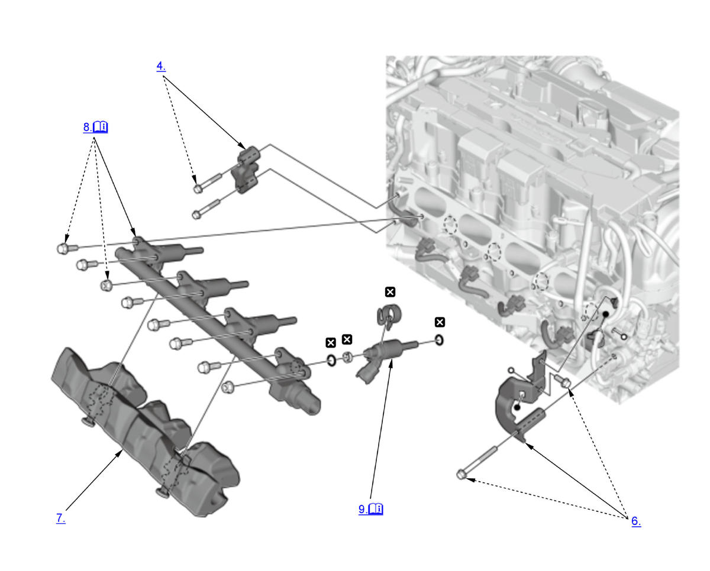

Injector Removal and Installation (K20C1) (2017 2018 2019 2020 2021): Removal: Procedure
NOTE:
Numbered call-outs in figure pertain to list numbers in following procedure.

Courtesy of HONDA, U.S.A., INC. |
Detailed information, notes and precautions |
 |
Replace |
- Fuel Pressure - Relieve
- Throttle Body - Move
NOTE:
- Do not disconnect the water bypass hoses.
- Do not bend the water bypass hoses excessively.
- Intake Manifold - Remove
- Joint Pipe Bracket - Remove
- Fuel Joint Pipe - Remove
- Fuel Rail Bracket - Remove
- Fuel Rail Insulator - Remove
- Fuel Rail and Injector - Remove
1. Carefully remove the fuel rail with the injectors straight from the cylinder head.
NOTE:- If the injector remains on the cylinder head, carefully remove the injector straight from the cylinder head.
- If you replace the cylinder head, use a new injector clip (A).
- Injector - Remove
NOTE: When you need not to replace the injectors, take note for the cylinder number of the injectors and take note for their positions before removing the injectors. 1. Using the pick up tool, carefully remove the seal (A) from the injector.